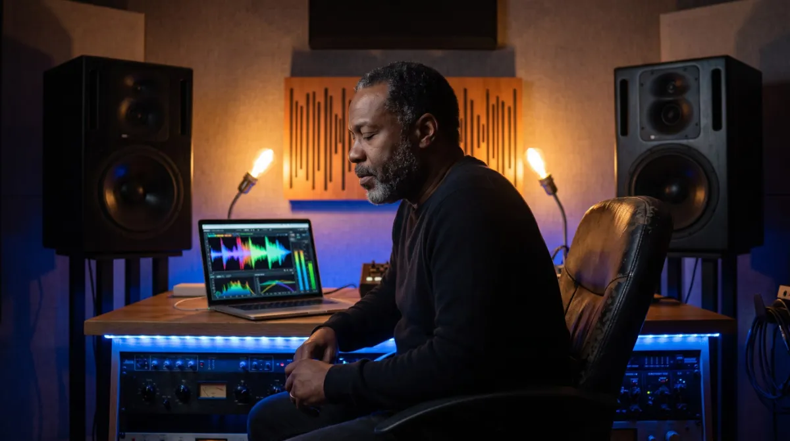
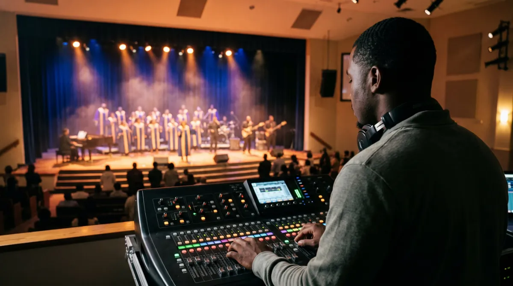
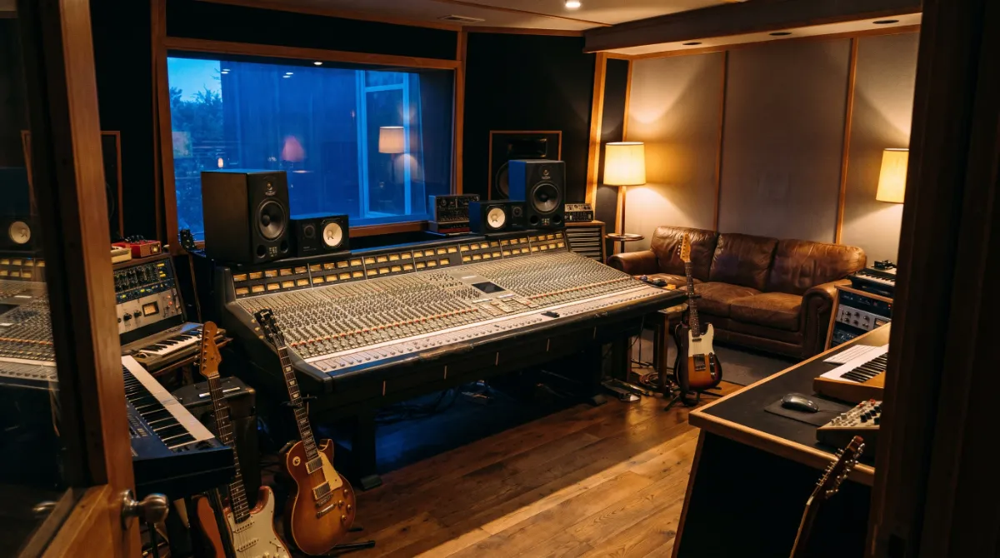

Amanorsac Studio · Charlottesville, Virginia, and remote worldwide
Mixing and Mastering
Bring me the song you believe in. I will send you back the record you have been hearing in your head since you wrote it.
Mixes Built Around the Voice
Most of the records that come through this studio are about singing: close harmony groups, gospel and highlife, worship albums cut live in a full room, and solo artists with a lead vocal that has to carry the whole song. So every mix here starts with the voices and works outwards.
On close harmony I match the timbre and align the phase of every part before I touch a single fader. That is the difference between a stack of voices that sound blended and one that sounds piled up. Then the band is built to sit around the singing, not on top of it.
Before and After
Hear the Difference, Not the Description
The same passage at the same moment. Switching between Before and After keeps your place in the clip, so you compare like with like.
Editing
Where Most of the Result Lives
The part nobody sees is the part that matters most. Comping the best takes, timing, tuning, repairing sibilance and plosives, shaping breaths and matching the noise floor across every take, so the mix starts from a performance that already sounds finished.
What Happens to Your Song
1. Listen
You send a reference and the rough mix. I tell you honestly what the mix can fix and what needs a new take. This call is free, and it saves everyone money.
2. Edit
Comping, timing, tuning, sibilance and plosive repair, breath shaping and matching the noise floor across takes.
3. Mix
Built around the voice. Timbre and phase on the harmonies first, then the band around them.
4. Revise
Two rounds are included. Timestamps get us there faster than adjectives.
5. Master
Streaming, broadcast and reference masters delivered separately, in stereo or Dolby Atmos.

Mastering
Mastered for Where It Is Going
A song on a streaming service, the same song on a Sunday broadcast and the same song in your car all need something slightly different. You get separate masters for streaming, for broadcast and a reference, in stereo or Dolby Atmos, so each one sounds right where it is heard.
How to Prepare Your Files
Format
WAV, 24 bit, at the session sample rate. No MP3s.
Start Point
Every track exported from the same start point, from zero.
Effects
Mostly dry, with the mix bus stripped. If an effect is part of the writing, keep it and tell me which one.
Levels
Peaks under −6 dBFS. If something clipped on the way in, send it anyway and flag it.
Names
Name tracks like a person would: Lead Vox, Alto Dbl 2, Kick In. Not Audio 14.
Context
Send a reference and a line about what the song is about. Both change decisions.

Live and Broadcast
A Lot of My Mixes Arrive Off a Stage
I run live capture and broadcast post on a weekly clock: multitrack off the desk on Sunday, mixed and mastered for release during the week. I run the broadcast chain end to end at a multicultural congregation in Virginia, and the live albums in my catalogue were cut the same way, in one take with a full room and no second chance.
If you have a service, concert or live session that needs mixing for release, it comes to this same desk.
On Record
The Work
Records I mixed and mastered. The same playlist as the front page.
Some of the Artists I Have Worked With
This list is the short version.
- Kingsley Anyenor
- Viv Adjei
- Blossom 3io
- Isaac Narh
- Brian Kuffour
- Siisi Baidoo
- Diana Hamilton
- and many more

Start a Project
Send the rough and a reference, and we will talk about what the song needs.